| BOREAS-Related WWW Pages | ||
|---|---|---|
Canada Centre for Remote Sensing (CCRS) |
Earth Observations Lab / York Ontario (BOREAS) |
Earth Observations Lab / University of Waterloo (BOREAS) |
| 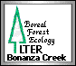 Bonanza Creek LTER, Alaska A Long Term Ecological Research (LTER) center in the boreal forest of Alaska. |
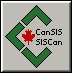 Canadian Soil Information System (CanSIS) |
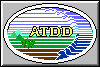 NOAA Atmospheric Turbulence and Difusion Division (ATDD) |
The NRC-Institute for Aerospace Research (IAR) |
Boreal Forest Watch (BFW) |
Canadian Model Forest Program (MFP) |
| Climate-Related Experiments | ||
|---|---|---|
| 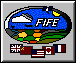 First ISLSCP Field Experiment (FIFE) -- Prairies of Kansas |
Superior National Forest (SNF) Project -- Forests of Minnesota | 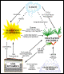 Forest Ecosystem Dynamics (FED) Project -- Forests of Maine |
Global Energy and Water Cycle Experiment (GEWEX) |
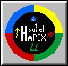 HAPEX Sahel Project -- Sahara Desert |
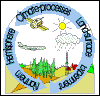 NOPEX Project -- Forests of Sweden |
| 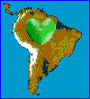 Large-Scale Biosphere-Atmosphere Experiment in Amazonia (LBA) -- Brazil |
 Anglo-BRazilian Amazonian Climate Observation Study (ABRACOS) -- Brazil |
ISLSCP -- International Satellite Land Surface Climatology Project (CD-ROM Set) |
| Climate-Related Pages | ||
|---|---|---|
| 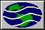 EOSDIS -- Goddard DAAC (Climate Data Archive) |
EOSDIS -- Goddard DAAC (Interdisciplinary Data Collection) |
NASA/Goddard Space Flight Center |
| 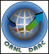 EOSDIS -- Oak Ridge DAAC (Biogeochemical/Ecological Data Archive) |
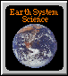 Earth System Science (ESS) Web Links Index |
European Centre for Medium-Range Weather Forecasts (ECMWF) |
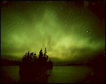 The Aurora Borealis in the northern sky
Norwegian Aurora Observatory -- History of the Aurora (mythology and history)
Rice University Aurora WWW pages -- Science of the Aurora (meteorology in space)